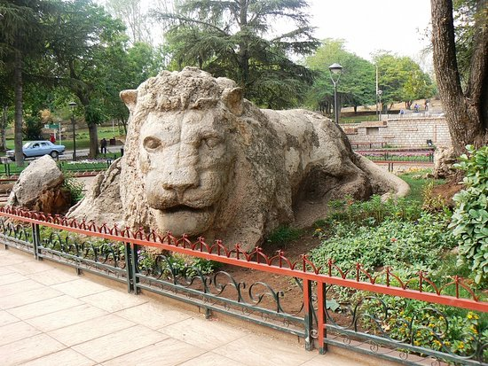
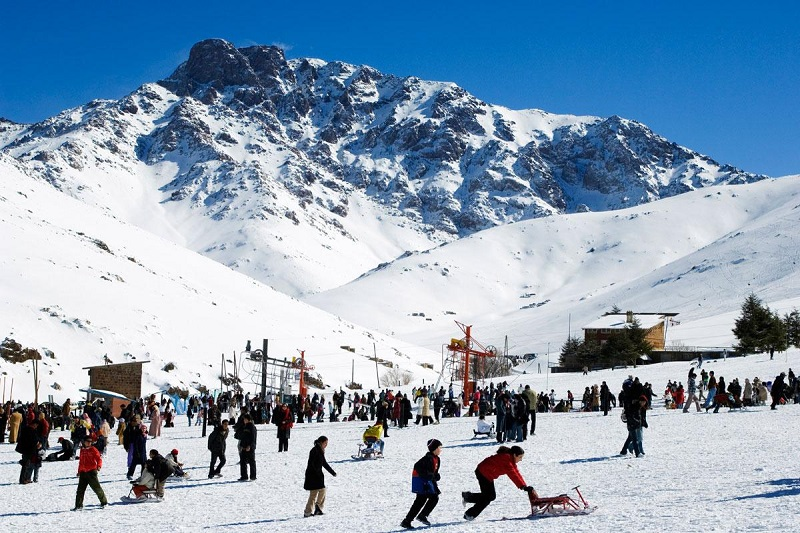
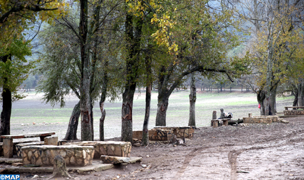
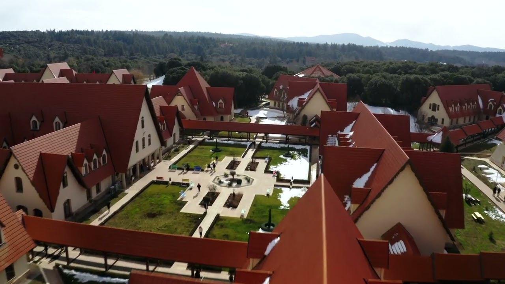
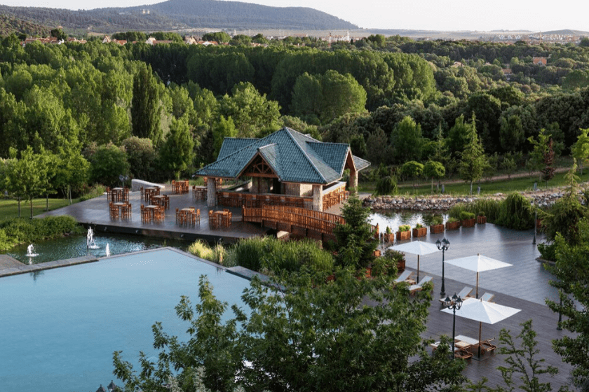

À propos d’Ifrane
Surnommée "la petite Suisse", Ifrane se distingue par ses chalets européens, son air pur et ses forêts verdoyantes. Située dans le Moyen Atlas, la ville est l’une des plus propres du monde et offre un environnement naturel exceptionnel.
Faits rapides
- Population: ~30k
- Région: Fès-Meknès
- Altitudes: 1 650 m
- Climat: Montagnard, très froid en hiver
Culture
Ifrane est connue pour sa tranquillité, son respect de l’environnement et son architecture unique au Maroc. Elle abrite l’Université Al Akhawayn, l’une des plus prestigieuses du pays.
C’est aussi un centre de sports d’hiver et de randonnée.
Nature
Forêts de cèdres, montagnes et lacs.
Sports d’hiver
Ski à Michlifen, randonnées enneigées.
Gastronomie
Viande grillée, truite, produits du terroir.
Écotourisme
Observation des singes magots, réserve naturelle.
Sites incontournables

Le Lion d’Ifrane
Statue emblématique au centre-ville, symbole de la ville.

Station de Michlifen
Station de ski célèbre du Moyen Atlas.

Lac Daït Aoua
Un des lacs les plus beaux du Maroc, idéal pour la détente.

Université Al Akhawayn
Campus prestigieux au style américain.

Parc National d’Ifrane
Célèbre pour ses cèdres centenaires et ses singes magots.